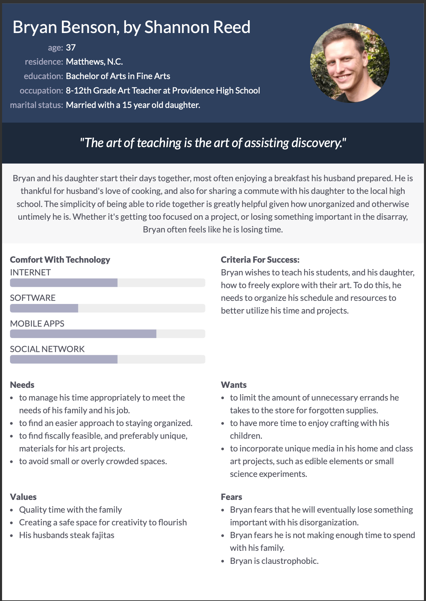

About Me

I recently graduated with a Bachelor of Science in Computer Science from the College of Engineering and Computing at the University of South Carolina. Input rest here: Code example?
Affinity Diagram: Grocery Route

My group and I discussed various aspects of, and ideas for, routing paths within grocery stores.
Persona: Personas for Grocery Route
Persona of a typical grocery route app users. Three additional personas are available in the PDF linked to the image and header.
Story Board: 4 Story Boards for Grocery Route
The story boards show a potential user experience with the Grocery Route App
Sketches

Rough ideas of how the application may look.
Paper Prototype

A paper walkthrough of the potential look of every screen in the application.
Hi-Fi Prototype
A Solo Hi_fi prototype to demonstrate application usability.